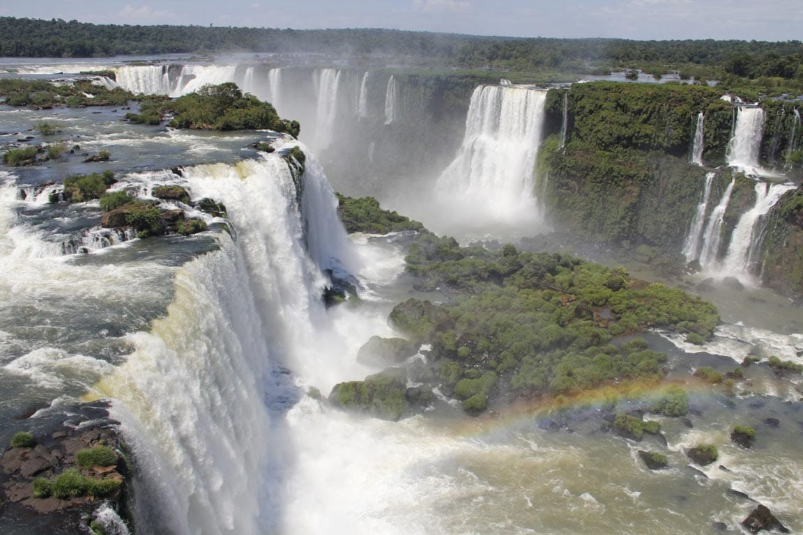
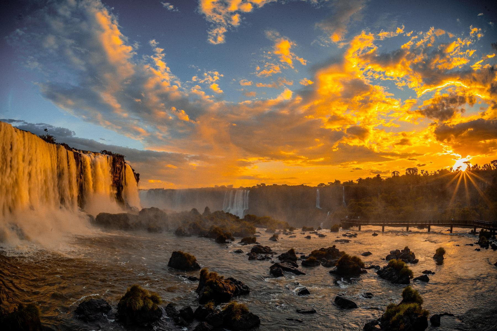

Localizadas na fronteira entre o Brasil e a Argentina, as Cataratas do Iguaçu abriga o maior sistema de
quedas d'água do mundo em extensão. O conjunto é formado por cerca de 275 saltos distribuídos em um formato
de herradura, com destaque para a Garganta do Diabo, onde o fluxo contínuo do Rio Iguaçu cria um espetáculo
natural impressionante que atrai milhões de visitantes todos os anos.

Santuário de Biodiversidade da Mata Atlântica
Além das imponentes quedas, a região é emoldurada por dois parques nacionais que protegem um dos últimos
remanescentes contínuos do bioma Mata Atlântica. O ecossistema abriga uma imensa diversidade de fauna e
flora, incluindo espécies raras e ameaçadas de extinção, como a onça-pintada e o gavião-real, tornando o
local um refúgio essencial para a conservação ambiental.
Patrimônio Mundial e Destaque no Ecoturismo
Reconhecidas como Patrimônio Mundial Natural pela UNESCO e eleitas uma das Novas Sete Maravilhas da Natureza,
as cataratas são um motor fundamental para o turismo sustentável regional. A infraestrutura dos parques
permite aos visitantes explorar trilhas e passarelas imersas na vegetação, promovendo a conscientização
ambiental e movimentando a economia das cidades fronteiriças de Foz do Iguaçu e Puerto Iguazú.
Lenda Indígena da Origem das Quedas
Segundo a mitologia Kaingang, as cataratas surgiram do furor do deus-serpente M'Boi. Tomado pela raiva ao
descobrir que a jovem Naipi fugia pelo Rio Iguaçu em uma canoa com seu amado Tarobá, o deus fendeu a terra,
criando os imponentes abismos que originaram as quedas d'água e condenando os amantes à eternidade sob o
impacto da correnteza.

Formação Geológica Milenar
A estrutura rochosa por onde a água corre começou a se desenhar há cerca de 130 milhões de anos, fruto de
intensas erupções vulcânicas que cobriram a região com espessas camadas de basalto. Com o passar do tempo, a
erosão provocada pelo fluxo do rio foi desgastando as fendas na rocha, moldando o relevo acidentado e as
profundas gargantas que observamos hoje